扉页
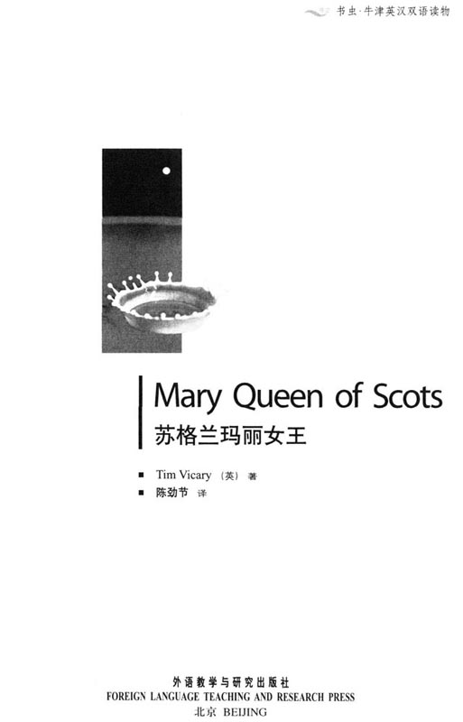
版权页
京权图字01-96-1578
Originally published by Oxford University Press, Great Clarendon Street, Oxford. © 1992
This edition is licensed for sale in the People's Republic of China only and not for export therefrom.
'Oxford' is a registered trademark of Oxford University Press.
只限中华人民共和国境内销售, 不包括香港特别行政区、澳门特别行政区及台湾省。不得出口。
图书在版编目（CIP）数据
苏格兰玛丽女王：英汉对照／（英）维卡里（Vicary，T.）著；陈劲节译．—北京：外语教学与研究出版社，1997.1（2014.11重印）
（书虫·牛津英汉双语）
书名原文：Mary Queen of Scots
ISBN 978-7-5600-1172-1
Ⅰ．①苏… Ⅱ．①维…②陈… Ⅲ．①英语—汉语—对照读物②斯图亚特，M.（1542～1587）—生平事迹 Ⅳ．H319.4：K
中国版本图书馆CIP数据核字（2013）第013000号
出版人：蔡剑峰
责任编辑：周 晶
封面设计：李 萌
出版发行：外语教学与研究出版社
社 址：北京市西三环北路19号（100089）
网 址：http://www.fltrp.com
版 次：1997年1月第1版
书 号：ISBN 978-7-5600-1172-1
* * *
凡侵权、盗版书籍线索, 请联系我社法律事务部
举报电话：（010）88817519 电子邮箱:banquan@fltrp.com
法律顾问：立方律师事务所 刘旭东律师
中咨律师事务所 殷 斌律师
简介
简 介
1561年，苏格兰还是个未开化的国家。当年轻的苏格兰女王从法国回到苏格兰时，起初，她的人民非常高兴见到她。她的丈夫——法国国王死了，现在，她需要一个新的丈夫。可是玛丽，这位苏格兰女王是个天主教徒，而当时大多数的苏格兰人都是新教徒。当时的英格兰女王——伊丽莎白一世也是位新教徒，在那个年代，人们都乐于为他们自己的教会而战，并不惜献出生命。
年轻的玛丽女王该嫁给谁呢？谁是她的朋友，谁是她的敌人？玛丽既美丽又聪明，她热爱生活，喜欢冒险，也热爱人民。或许，她爱的人太多了。人们说她“又狂又坏，认识她是危险的”。但那是真的吗？
1587年，玛丽坐在英格兰的福瑟临黑城堡里，疲惫又忧伤。现在她是伊丽莎白女王的囚徒，不久将被送上断头台，她拿起笔开始给她的儿子詹姆斯——现在的苏格兰国王写信。这就是她一生的故事……
提姆·维克瑞是位经验丰富的教师、作家。他在英格兰北部的约克镇上居住、工作。
目录
1 Fotheringhay
1
Fotheringhay
My name is Bess Curle, but this is not my story. It is the story of my lady Mary, Queen of Scots. She wrote the story, and then she gave it to me. I am going to give it to her son.
She began the story a week ago. It was January 1587, and we sat here in our cold room in Fotheringhay Castle, in the north of England. We couldn't see much from the window. One or two houses, a river, some trees, some horses, and a road. That's all.
The road goes to London, the home of Queen Elizabeth of England. Mary sat with her little dog in her hands and watched it, all day long.
No one came along the road. Nothing happened. I watched Mary, unhappily.
'Please, Your Majesty, come away from that window,' I said. 'It doesn't help. No one is going to come. Queen Elizabeth can't do it—Queens don't kill Queens.'
'Don't they, Bess?' Mary said. 'Then why are we here, in this prison? Why am I not free?'
'Why, Your Majesty? Because Queen Elizabeth is afraid of you.'
'That's right,' Mary said. 'She's afraid of me, and she hates me too. She hates me because I am beautiful, and she is not; because I had three husbands, and she never married. And because many people—good Catholic people in England, France, Scotland, Spain—say that I, Mary, am the true Queen of England, not Elizabeth. And Elizabeth has no children, so, when she is dead, my son James...'
She came away from the window and stood in front of me. 'James,' she said quietly, 'my son. Does he think about me sometimes? He was only ten months old when I last saw him. It is nearly twenty years...'
'Of course he thinks about you, Your Majesty,' I said. 'You write to him often. How can he forget his mother?'
'Then why doesn't he write to me?' Mary asked. 'Does he want me to stay here in an English prison?'
'No, of course not, Your Majesty. But—he has a lot of work, Your Majesty. He is the King of Scotland, and...'
'He is not the King of Scotland, Bess,' she said. 'Not before I am dead. Remember that.'
'No, Your Majesty, of course not. But perhaps people tell him things that are untrue. You know what people say. Perhaps—perhaps he thinks you killed his father.'
Mary's face went white. She was very angry, and for a minute I was afraid. She said: 'You know that's a lie, Bess. It is a lie! I did not kill James's father—I knew nothing about it!'
'I know that, Your Majesty. But perhaps James doesn't know it. He hears so many lies, all the time. He needs to know the true story. Why don't you write, and tell him?'
Mary sat down slowly. She looked old and tired. 'All right, Bess,' she said. 'Give me a pen, please. I'm going to write to James, and tell him the true story. You can give it to him when I'm dead.'
'Dead, Your Majesty? Don't say that. You aren't going to die.'
Her old, tired eyes looked at me. 'Yes I am, Bess. You know what is going to happen. One day soon, a man is going to bring a letter from Queen Elizabeth. And then her men are going to kill me. But before I die, I would like to write to my son James. I want to tell him the story of my life. So give me a pen, please.'
I gave her a pen. This is what she wrote:...
lady n. a woman. 夫人；女士。
queen n. woman who rules a country. 女王。
castle n. big, strong building. 城堡。
come along appear; arrive. 出现；到达。
hate v. to dislike someone or something very much. 仇恨；憎恶。
husband n. man to whom a woman is married. 丈夫。
dead adj. not living. 死的。
quietly adv. calmly. 平静地。
king n. a man who rules a country and is the senior male member of the royal family. 国王。
remember v. keep something in your mind. 记住。
angry adj. feeling or showing anger. 生气的；愤怒的。
lie n. untrue words. 谎言。
slowly adv. not quickly. 慢慢地。
tired adj. needing to rest. 疲劳的；累的。
kill v. make a living person die. 杀死。
wrote v. past tense of 'write'. “写”的过去式。
1 福瑟临黑
1 福瑟临黑
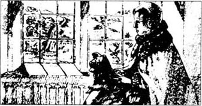
我的名字叫贝斯·柯尔，但这不是我的故事。它是有关苏格兰女王玛丽夫人的故事。她写下了这个故事，便交给我。我将把它转交给她的儿子。
她开始写这个故事是在一个星期以前。那是在1587年的1月，我们坐在英格兰北部福瑟临黑城堡中的一间寒冷的屋子里。透过窗户，我们看不到多少东西，一两幢房屋，一条河流，一些树木，几匹马和一条路，仅此而已。
这条路通往伦敦——英格兰伊丽莎白女王的家乡。一整天玛丽都坐着，手里抱着她的小狗，两眼望着这条路。
没有人从这条路上走来，什么也没有发生。我望着玛丽，心里很悲哀。
“陛下，请您离开那扇窗户吧，”我说道，“那没有用。不会有人来的。伊丽莎白女王不能那样做——女王不杀女王的。”
“难道她们不会吗，贝斯？”玛丽说，“那我们为什么会在这里，待在这个监狱里？为什么我不能自由？”
“您问为什么吗，陛下？那是因为伊丽莎白女王害怕您。”
“对极了，”玛丽说，“她怕我，并且还恨我。她恨我是因为我漂亮，而她不漂亮；是因为我有三任丈夫，而她从未结过婚。还因为许多人——英格兰、法国、苏格兰、西班牙的好心的天主教教徒们说我玛丽才是英格兰真正的女士，而非伊丽莎自。伊丽莎白没有小孩，因此，她死后，我的儿子詹姆斯……”
她离开窗口走过来站在我的面前。“詹姆斯，”她平静地说，“我的儿子。他有时会想起我吗？我最后一次见到他时他才10个月大。都快20年了……”
“他当然会想您的，陛下，”我说，“您经常给他写信，他怎么可能忘记自己的母亲呢？”
“那为什么他不给我写信呢？”玛丽问道，“他想让我待在英格兰的监狱里吗？”
“不，当然不，陛下。可是——他有许多事要做，陛下。他是苏格兰国王，而且……”
“他不是苏格兰国王，贝斯，”她说，“我没死，他就还不是，记住这点。”
“是的，陛下，他当然不是。可是也许人们会告诉他一些不真实的情况。您知道人们会说什么。也许——也许他认为是您杀死了他的父亲。”
玛丽的脸一下子变白了。她很愤怒，那一会儿我真觉得害怕。她说：“你知道那是个谎言，贝斯。那是个谎言！我没有杀死詹姆斯的父亲——我对那一无所知！”
“我知道，陛下。可是也许詹姆斯不知道。一直以来他听了那么多谎言，他需要知道真实的情况。您为什么不写信告诉他呢？”
玛丽慢慢地坐了下来。她看起来又苍老又疲惫。“好吧，贝斯，”她说，“请给我一支笔，我这就给詹姆斯写信，告诉他真实的故事。我死后，你可以把信交给他。”
“死？陛下，不要那样说。您不会死。”
她看着我，眼神苍老而疲惫地说道：“不，我会死的，贝斯。你知道将会发生什么。不久的一天，会有一个人带来伊丽莎白女王的一封信。随后，她的人便会杀了我。但在我死之前，我要给我的儿子詹姆斯写信。我要告诉他我一生的故事。来，给我一支笔吧。”
我拿给她一支笔。这就是她所写的：……
2 France
2
France
Dear James. Very soon I am going to die, and meet my God. Before I die, I want to write the true story of my life for you. Everything that I write here is true—I cannot lie to you, or to God. Please believe that, James. It's important to me.
My father died when I was one week old, so I was the Queen of Scots when I was a baby. At first I lived with my mother in Scotland, and then, when I was five, I went to France. My mother was French, but she stayed in Scotland, and died there.
I went to France to marry the King of France's son. His name was Francis, and he was one year younger than me. In 1559, his father died, so Francis was King. Then I was Queen of France, and Queen of Scotland too.
I was very happy in France. Francis, my husband, was like a little brother to me. I think he loved me, but he was very young, and he was often ill. And then, in 1560, he died. He was sixteen years old.
When he died I was very unhappy, and my life was very different. There was a new King and Queen, and I wasn't important in France, any more. But I was still Queen of Scots, so I came back to Scotland. When I arrived in Scotland, I was a young girl of eighteen. My mother was dead, and there was no one there to meet me. I walked off the ship, and I slept in a little house near the sea.
Next day, the Scots lords came from Edinburgh. They were pleased to see me, and for a week everyone was happy. People smiled at me and sang in the streets. I think everyone liked me. Then, that Sunday, I went to church.
James, my son, you are a Protestant and I am a Catholic. You are a good man, and you love God, but your church and my church are enemies. I was born a Catholic, and I am going to die a Catholic. I love God, too—I hope you understand that. I'm not going to change now.
That Sunday, people shouted angrily in the streets. 'Your Majesty,' said the Scots lords. 'Scotland is a Protestant country. You can't go to a Catholic church here. The Scottish people don't like Catholics.'
'I'm sorry, my lords,' I said. 'But I am your Queen—no one tells me what to do. I don't hate Protestants, and I'm not going to kill them. The people can go to their Protestant churches, and pray to God there. But I'm going to pray with Catholics, in my church.'
People were angry because of that. A man called John Knox came to see me. He was a famous Protestant churchman, but I didn't like him. He was a big, angry man with black clothes. He hated the Catholic church, and wanted all Catholics to leave Scotland. To him, the Protestant church was the only true church of God. He said: 'Your Majesty, you're a young woman, like my daughter. Women can't understand difficult things like God or the church. Find a good Protestant husband, girl. Let him rule this country for you.'
I was very angry with this man Knox. I was a Queen, but I was only eighteen. He didn't talk quietly—he shouted at me. I cried because of his angry words. I could not understand him—he talked so much, and he knew so many books. But I did not go to his church.
He was right about one thing. Perhaps I could rule Scotland without a man, but I could not have a child without one. And every Queen needs a son or daughter to come after her. So I began to look for a husband.
believe v. to think something is true. 相信。
baby n. a very young child. 婴儿。
happy adj. glad. 高兴。
unhappy adj. not happy. 不高兴的。
meet v. to come together with somebody. 迎接。
be pleased to be glad to. 很高兴做某事。
Catholic n. a member of the Roman Catholic Church. 天主教教徒。
church n. God's house. 教堂。
shout v. cry words out loudly and strongly. 呼喊；喊叫。
Protestant adj. of or relating to any of the Protestant Churches or their members. 新教（教徒）的。
difficult adj. not easy. 困难的。
rule v. to officially control or govern a country or area. 统治。
look for to try to find. 寻找。
2 法国
2 法国
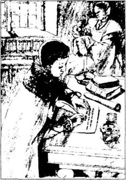
亲爱的詹姆斯，很快我就要死去，去见我的上帝了。在我死之前，我要给你写下我一生真实的故事。在这里我写的一切都是真实的——我不能对你说谎，也不能对上帝说谎。请相信这一切，詹姆斯，这对我很重要。
在我出生只有一个星期的时候我的父亲便去世了。因此在我还是个婴儿的时候我就成了苏格兰的女王。起初我和母亲一起住在苏格兰，后来在我五岁的时候我去了法国。我母亲是法国人，可是她却待在苏格兰，并且在那里过世。
我去法国并嫁给了法国王子。他叫弗朗西斯，比我小一岁。1559年，他的父亲去世了，因此弗朗西斯成了国王。于是，我既是法国王后，又是苏格兰女王。
在法国我很幸福。我的丈夫弗朗西斯就像是我的一个小弟弟。我想他是爱我的，但是他太年轻了，还经常生病。之后，1560年，他死了，年仅16岁。
他死后我非常伤心，而且我的生活也发生了很大的变化。法国有了新的国王和王后，我在法国已显得不再重要，但是我仍然是苏格兰的女王，因此，我回到了苏格兰。回到苏格兰的那会儿，我是个才18岁的小姑娘。我的母亲已经去世了，因此没有人来接我。我下了船，就在海边的一间小屋里过夜。
第二天，苏格兰的贵族们从爱丁堡来了，他们见到我很高兴。有一个星期大家都很开心。人们朝我微笑，在大街上唱歌。我以为每个人都很喜欢我。然后，在那个星期天，我去了教堂。
詹姆斯，我的儿子，你是个新教徒而我是个天主教徒。你是好人，且热爱上帝，可是你的教会和我的教会是仇敌。我生为天主教徒，死也是天主教徒。我也爱上帝——我希望你能理解这些。即使现在我也不打算改变。
那个星期天，人们在大街上愤怒地叫喊。“陛下，”那些苏格兰贵族们说道，“苏格兰是个信奉新教的国家。您不能去这里的天主教教堂。苏格兰人民不喜欢天主教徒。”
“很抱歉，我的勋爵们，”我说，“可我是你们的女王——没有人能告诉我该怎样做。我不憎恨新教徒，也不会杀害他们。人们可以去他们的新教教堂，并在那里向上帝祈祷。而我也将和天主教教徒们一起在我的教堂里向上帝祈祷。”
人们听到这些发怒了。一个名叫约翰·诺克斯的人来见我。他是个有名的新教教士，可我不喜欢他。他个头很大，怒气冲冲，穿着一身黑衣服。他憎恨天主教会，且想让所有的天主教教徒都离开苏格兰。对他来说，新教教会才是唯一真正属于上帝的教会。他说道：“陛下，您是位年轻女子，就像我的女儿。女人是不会懂得诸如上帝、教会这类艰深难懂的事情的。找一个新教徒的好丈夫吧，女孩，让他来为你统治这个国家。”
我对这个名叫诺克斯的男人很生气。我是女王，可我只有18岁。他没有平静地和我说话——他对我大声叫嚷。由于他措词严厉，我哭了。我无法理解他，虽然他说了那么多，并读过那么多书。但我不会去他的教堂。
可有一点他是对的。没有男人，或许我可以统治苏格兰，但没有男人，我就不会有小孩。每个女王都需要有个儿子或女儿来继承王位。因此我开始物色一个丈夫。
3 Darnley and Riccio
3
Darnley and Riccio
At first I wanted to marry the son of the King of Spain, Don Carlos. But he was a Catholic, of course, and my Scots lords did not like that. It was difficult for me, James. I wanted to please myself. I wanted to please my friends and family in France and to please my people, too. And then there was the Queen of England.
At first I wanted very much to be friends with Elizabeth. We wrote many letters, and talked about a meeting—a meeting between two sister Queens. Elizabeth wrote to me at this time.
Our two countries need to be friends. You need a husband, I need a friend. Why not marry my friend Robert Dudley, the Earl of Leicester? He is a tall, strong man. I think he could be a good husband for you.
I was very angry about this letter. There were a lot of stories about Elizabeth and Robert Dudley. They were good friends—he often danced and sang and talked with her. Sometimes, people said, he stayed in her room all night. Dudley had a wife, but one day she died very suddenly. It was an accident—she fell down the stairs, they say. But then, perhaps she was unhappy, because of her husband and Elizabeth.
'And she writes to me about a man like this!' I thought. 'She wants him to marry me, because he is her friend—her lover, perhaps! She wants her lover to be King of Scotland!'
I found a better man than Dudley, James. I found Henry Darnley, your father.
He was nineteen years old, and I was twenty-three. He was a tall man, with a beautiful face and big green eyes. He talked and sang well, and I liked dancing with him. He often wore expensive black clothes, and he laughed a lot when he was with me. He was very young and friendly, and I felt happy when I was with him. I liked him very much, and I thought he loved me too.
He was an important man, too. We were cousins—his grandfather was King of Scots, and his great-grandfather was Henry Ⅶ of England.
In July 1565, I married him. Elizabeth was very angry, and so were a lot of the Scots lords. My half-brother, the Earl of Moray, tried to stop the marriage. I had to fight him, and he ran south, to England. But I was happy. Your father and I laughed, every day. He was now Henry, King of Scots.
After one or two weeks, the laughter stopped. A King has a lot of work, James, you know that. He has to read hundreds of letters, talk to people, and think about a lot of important things. I did those things, every day. But now, I thought, I had a man to help me.
'My lord Henry,' I said. 'Would you like to read all the letters with me? You can sit next to me, and you can work with me every day.'
Your father looked unhappy. 'I'm not interested in work like that,' he said. 'I don't understand it.'
'Of course not,' I said. 'You're a young man, my love. But I can teach you.'
For one or two days he sat down with me, and I tried to teach him. But it was true, he was not interested in the work, and he did not try to understand it.
'You do it, Mary,' he said. 'I'm going out with my friends. We're going to ride, and drink, and swim.'
So I did all the work. At night, too, he often went out with his friends in the town. They drank a lot, and laughed and sang, and there were often fights. But no one said anything, because he was the King, my husband. What could people say? They were unhappy, but they were afraid of him. Some of them went to England, to the Earl of Moray.
At this time I was often very tired, because I was pregnant. You, my son James, were alive inside me. But I did all the work of a Queen and I needed friends too. One of these friends was a young Italian, David Riccio.
Riccio was a little man and he was not tall or beautiful or strong. But he was a very clever, interesting man. He wrote many of my letters for me, and helped me. He sang well, too, and I sometimes sang with him in the evenings. I liked him very much, and at first, your father liked him too.
But then, Moray's friends began to talk about me and Riccio. 'David Riccio is in the Queen's rooms every night,' they said to your father. 'She laughs and sings and dances with him, my lord—it is not right! He is not a Scotsman, and he is not her husband. He is always with her.'
Perhaps they said other things, too—I don't know. A lot of Scots lords listened to them. But I tell you, James, before God, I did nothing wrong. David Riccio was a good man. He worked hard, and he helped me—so of course I liked him. Your father did not work—he went out to the town every night with his friends, and drank.
And then one night. your father came home.
dance v. to move to music. 跳舞。
because of by reason of. 因为；由于。
expensive adj. costing a lot of money. 昂贵的；高价的
friendly adj. kind. 友好的。
cousin n. child of your uncle or aunt. 堂（或表）兄弟；堂（或表）姐妹。
half-brother n. a brother who has either the same mother or the same father as you. 同父异母兄弟；同母异父兄弟。
be interested in 感兴趣的。
strong adj. with a powerful body. （身体）强壮的；强健的。
sang v. past tense of 'sing'. “唱歌”的过去式。
talk about 谈论。
wrong adj. not correct. 不对的；错误的。
drank v. past tense of 'drink'. “喝；饮”的过去式。
3 达恩利和里奇奥
3 达恩利和里奇奥
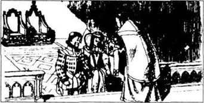
开始的时候，我想嫁给西班牙国王的儿子，唐·卡洛斯。可他是个天主教徒。当然，我的这些苏格兰贵族们不喜欢那样。这对我太难了，詹姆斯。我想让自己愉快，又想让我在法国的朋友和家人高兴，也想让我的人民满意。此外，还有英格兰女王。
起初，我极想和伊丽莎白交朋友。我们通了很多信，并讨论有关会面的事宜——两位女王姐妹之间的会面。这时，伊丽莎白给我写信道：
我们两个国家需要成为朋友。你需要一个丈夫，而我需要一个朋友。为什么不嫁给我的朋友莱斯特伯爵罗伯特·达德利呢？他高大健壮，我想他会成为你的好丈夫。
对这封信我很恼火。关于伊丽莎白和罗伯特·达德利之间有许多传闻。他们是好朋友——他经常和她唱歌、跳舞、聊天。人们说他有时还一整夜待在她的房间里。达德利有妻子，但有一天却突然死了。他们说那是一次意外事故——她从楼梯上摔了下来。不过，也许她很不快乐，由于他丈夫和伊丽莎白的关系。
“她写信给我介绍这样一个男人！”我想，“她想让他娶我，是因为他是她的朋友——或许是她的情人。她想让她的情人成为苏格兰的国王！”
詹姆斯，我找到了一个比达德利好的男人，他就是你的父亲亨利·达恩利。
他19岁，我23岁。他很高大，有一张英俊的脸庞和一双绿色的大眼睛。他说话很动听，歌也唱得好。我很喜欢和他一起跳舞。他经常穿一身昂贵的黑色衣服，而且和我在一起时他常常开怀大笑。他是那样年轻友善，和他在一起我感到很幸福。我非常喜欢他，我想他也爱我。
他还是个很重要的人物。我们是堂姐弟——他的祖父曾是苏格兰国王，他的曾祖父是英格兰的亨利七世。
1565年7月，我嫁给了他，伊丽莎白非常恼怒，许多苏格兰贵族也是。我的同父异母兄弟，马里伯爵，试图阻止这场婚姻。我不得不和他作战，他逃到了南方，去了英格兰。但是我很快乐。你的父亲和我每天欢声笑语。他现在是苏格兰亨利亲王了。
过了一两个星期，笑声不复存在。一个国王有许多工作要做，詹姆斯，你是知道的。他不得不阅读成百上千封书信；和民众交谈；考虑许多重要的事务。我每天做这些事情，不过现在，我想我有个男人来帮我了。
“亨利，我的勋爵，”我说，“你想和我一起阅读这些书信吗？你可以陪在我身边，每天和我一起工作。”
你父亲看起来不太高兴。“我对那样的工作不感兴趣，”他说，“我不懂那些。”
“当然不懂啦，”我说，“你还年轻，我亲爱的。不过我可以教你，”
他和我一起坐了一两天，我试着去教他。但没错，他确实对这项工作不感兴趣，也不打算去领会。
“你做吧，玛丽，”他说，“我要和朋友们出去，我们要去骑马、喝酒、游泳。”
因此我又承担起所有的工作。晚上，他也经常和镇上的朋友一起出去。他们喝很多酒，又笑又唱，还经常打架。但没有人说什么，因为他是亲王，我的丈夫。人们能说什么呢？他们很不高兴，但他们怕他。他们中有些人去了英格兰，到马里伯爵那里去了。
那段时间我经常感到疲惫不堪，因为我怀孕了。你，我的儿子詹姆斯，在我的体内生存着。可我仍在做一个女王应做的一切工作，而我也需要朋友。朋友中有一位是个年轻的意大利人，叫达维·里奇奥。
里奇奥是个小男人，他不高，不好看，也不强壮，但他是个非常聪明、有趣的男人。他替我写了许多信，给我帮助。他歌也唱得好，在晚上，有时我们一起唱歌。我很喜欢他，起初，你的父亲也喜欢他。
不过没多久，马里的朋友们开始谈论我和里奇奥。“达维·里奇奥整夜待在女王的房间里。”他们对你的父亲说，“她和他唱歌、跳舞，笑声不断，我的亲王——这是不对的！他不是苏格兰人，也不是她的丈夫，可他总是和她在一起。”
也许他们还说了些别的事情——我不太清楚。很多苏格兰贵族都听到了。不过我告诉你，詹姆斯，在上帝的面前，我没做任何错事。达维·里奇奥是个好人，他工作努力，还帮助我——我当然喜欢他。你的父亲不工作——他每天晚上和他的朋友到镇上去喝酒。
此后的一天晚上，你的父亲回家来了。
4 The death of David Riccio
4
The death of David Riccio
It was a Saturday evening in March 1566. I was in Edinburgh with some friends. David Riccio was there, with six or seven other people. We were in a small room, but there was a good dinner on the table, and we were happy. It was dark outside, but inside it was warm and friendly.
Suddenly, a door opened behind me. In the door was Henry Darnley, my husband. I stood up and smiled.
'Good evening, my lord,' I said. 'Please come in. Would you like something to eat?'
'No, thank you,' he said. 'I'm not hungry. But I want to sit next to you, wife. Please tell that man to move.'
A man got out of the chair next to me and Darnley sat beside me. Then he put his arms round me. I did not like it. His face was hot, and his eyes looked unhappy. But I smiled and said, 'I'm happy to see you, my lord.'
'Are you, Mary?' He laughed. 'Are you really?'
'Yes, of course, my lord. But—'
Then the second door opened and his friend, Lord Ruthven, stood there. He had a knife in his hand. His face was red, and he looked very angry.
At first no one moved. Then Ruthven said, 'Your Majesty, send David Riccio out of this room, now! I want him!'
I looked at Riccio. He was afraid. 'Why?' I said. 'Why do you want him?'
'He is a bad, wicked man!' Ruthven said. 'Send him out!'
'No!' I said. 'You want to kill him. David Riccio is my friend! He stays here, with me!'
'He goes out, woman!' Lord Ruthven said. 'King Henry, hold your wife, please!'
I stood up, but Darnley held my arms and I could not move. David Riccio ran behind me and held my dress. My friends in the room stood up too, and moved towards Ruthven angrily. But he had a knife in his hand.
'Get back!' he said angrily. 'Don't touch me!'
Then five men with knives ran into the little room, and there was a fight. One man held a knife in my face, and another man hit David Riccio, behind me. Then they pulled him out of the room.
'Help me!' he screamed. 'Help me, my Queen—please! They're going to kill me! Don't—aaaaaargh!'
I couldn't help him, because Darniey had me in his arms. But I could hear David Riccio's screams. I think he fell down the stairs, and he screamed for two or three minutes. Then it was quiet.
'What are you doing?' I asked Darnley angrily. 'Riccio is a good man—why are you doing this?'
Darnley laughed. 'You are my wife, Mary—not David Riccio's!' he said. 'So why are you with him every evening? You never talk to me!'
'I don't talk to you because you are never here!' I said. 'You are always drinking with your friends! You aren't a king, you're a stupid boy!'
He laughed again. It was not a nice laugh. 'Well,' he said. 'Perhaps I am a boy, but that is better than David Riccio, now. Do you want to go and see him?'
I did see him, five minutes after that. He was very dead, and there was blood all over the floor. Poor David Riccio. He sings to God now, not me.
I looked at Henry Darnley, my husband. He had a stupid smile on his face. But I think he was afraid of me. I looked at him a long time, and the smile went away.
'Remember this night, husband,' I said to him. 'Remember it well. Think about it when you look into my eyes, and before you go to sleep. David Riccio was my friend, and you killed him in front of me. I'm never going to forget that, Henry Darnley. Never!'
inside adv. in. 在里面。
hungry adj. wanting food. 饥饿的。
stood v. past tense of 'stand'. “站”的过去式。
wicked adj. very bad. 很坏的；邪恶的。
ran v. past tense of 'run'. “跑”的过去式。
scream v. cry out loudly. 尖叫；叫喊。n. a very loud high noise. 尖叫；尖锐刺耳的声音。
stupid adj. foolish. 愚蠢的。
nice adj. pleasant; good. 令人愉快的；美好的。
blood n. red liquid which flows through the body. 血；血液。
poor adj. that makes you sad. 可怜的。
went v. past tense of 'go'. “走”的过去式。
forget v. not remember. 忘记。
4 达维·里奇奥之死
4 达维·里奇奥之死
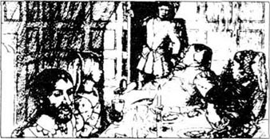
1566年3月的一个星期六晚上，我和一些朋友待在爱丁堡。达维·里奇奥也在那里，另外还有六七个人。我们在一间小屋子里，而桌上摆着丰盛的菜肴，我们都很高兴。虽然外面夜幕笼罩，但屋子里充满了温暖和友好的气氛。
突然，我身后的门被打开了，门口站着我的丈夫亨利·达恩利。我站起来朝他笑。
“晚上好，勋爵，”我说道，“请进来吧，你想吃点什么吗？”
“不，谢谢，”他说，“我不饿。但我想坐在你身边，我的妻子。请叫那个人走开。”
一人从我身旁的座位上站起来，达恩利坐到了我身边。然后他伸出手环抱着我。我不喜欢这样。他的脸很热，他的眼神看起来很不高兴。但我还是笑着对他说：“很高兴见到你，勋爵。”
“是吗，玛丽？”他笑道，“是真的吗？”
“是的，当然是的，勋爵。不过——”
接着，第二扇门打开了，他的朋友——鲁斯温勋爵站在那儿。他手里拿着一把刀，他的脸红红的，满脸怒容。
起初，谁也没有动。然后鲁斯温说道：“陛下，叫达维·里奇奥从这房间里出去，马上！我要带他走！”
我看着里奇奥，他显得很害怕。“为什么？”我问，“你为什么要抓他？”
“他是个不讲道德的坏人！”鲁斯温说，“把他赶出去！”
“不！”我说，“你想杀了他。达维·里奇奥是我的朋友！他就待在这里，和我在一起！”
“他得出来，女人！”鲁斯温勋爵说，“亨利亲王，抓住你的妻子，快点！”
我站了起来，可是达恩利抓住我的胳膊，我不能动弹。达维·里奇奥跑到我身后抓住我的衣服。我房间里的朋友们也站了起来，愤怒地向鲁斯温逼近，但是鲁斯温手里拿着刀。
“回去！”他怒吼，“不要碰我！”
接着，五个拿刀的男人冲进了这间小屋。一场冲突开始了。一个男人把刀架在我面前，另一个人去攻击躲在我身后的达维·基奇奥。然后他们把他拖出了房间。
“救命！”他尖叫道，“救救我，我的女王——请救救我！他们要杀我！不要——啊！”
我帮不了他，因为达恩利紧紧抓着我。可是我能听到达维·里奇奥的尖叫声。我想他是从楼梯上摔了下去，尖叫持续了二三分钟后，一切归于平静。
“你在干什么？”我愤怒地责问达恩利，“里奇奥是个好人——你为什么要这样做？”
达恩利笑了起来“你是我的妻子，玛丽——不是达维·里奇奥的！”他说，“所以你为什么要每晚和他待在一起？你从没对我说过！”
“我没有对你说是因为你从来不在这里！”我说，“你总是和你的朋友们不停地喝酒！你不是个亲王，你是个愚蠢的小男孩！”
他又一次笑了，那是个不怀好意的笑。“好吧，”他说，“也许我只是个男孩，但此刻也比达维·里奇奥强。你想去看看他吗？”
五分钟后，我看到了他。他已经死了，地上到处是血。可怜的达维·里奇奥，他现在给上帝唱歌了，而不再为我。
我看着亨利·达恩利——我的丈夫。他脸上带着愚蠢的微笑。但我认为他还是怕我的。我盯着他看了很久，他脸上的笑容渐渐消失了。
“记住今天晚上，丈夫，”我对他说，“好好记住。在你看着我的眼睛的时候，在你上床睡觉之前，好好想一想这件事。达维·里奇奥是我的朋友，而你却当着我的面杀死了他。对此我永远都不会忘记，亨利·达恩利，永远不！”
5 My son is born
5
My son is born
Next morning, Darnley came to see me. He was afraid. 'What's the matter, husband?' I said. 'Why are you crying?'
'Oh Mary, Mary!' he said. 'I'm sorry! I was wrong! I helped those men to kill Riccio, and now the Earl of Moray is back here with them! He hates me! I am afraid they're going to kill me, and you too. Think of our child, Mary, here inside you!'
He took me in his arms again. I was very angry. I am sorry, James, that this man was your father. He was a stupid boy, not a man. He was tall and strong and beautiful but he could never think like a man or a king.
I said, 'You know these men, Henry. What do they want?'
'They—they want our child, Mary. They don't want us. They're going to put you in prison. They don't want you to be Queen—they want your child to be King or Queen. I—I don't know what they want to do with me.'
'Perhaps they want you to be King, too, without me,' I said quietly. 'Then you can do what they say, like a little boy.'
'Perhaps, Mary. They said that, yesterday. But now that Moray's here—I don't know. I'm afraid. Please help me!' He began to cry again. 'What can we do?'
'We can run away,' I said. 'We can leave Edinburgh quickly and quietly, before Ruthven and his men stop us. Be quiet for a minute. I want to think.'
I walked up and down for two or three minutes, then I said: 'Henry, go back to these men. Tell them—'
'No! Mary, please! I can't! I'm afraid of them!'
'Listen to me, Henry! And try to be a man. Go and tell them I'm ill, because of the child. Say I'm not angry with them. Tell them anything—lie to them. Then, tonight, bring some men and horses here, behind the castle...'
He went, and did it. All day I waited in my rooms. and listened. Then, at one o'clock in the morning, Darnley and I went quietly down the stairs behind the castle. Some of my friends were there, with horses for us. Quickly, we rode away into the night.
That was a very bad night. It was dark and cold. I was ill, and Darnley was afraid. 'Come on!' he said. 'Ride faster, woman! You're too slow!'
But I was pregnant, and it was cold and dark. We rode for five hours in the rain. 'I can't, Henry!' I said. 'I'm ill. Think of the baby! I don't want it to die!'
'Why not?' he said. 'We can always make another one!'
I'm sorry, but it is true. Your father said things like that, James. Then he rode away in front of me, into the dark. I rode slowly behind, with my good woman, Bess Curle.
In the morning we arrived at Dunbar Castle. Darnley slept, and I wrote letters to my friends. Next day Lord Bothwell came to help me. I liked him—he was a good, strong man. Soon I had an army of 8,000 men. Bothwell and I rode back to Edinburgh with the army. Lord Ruthven died, and some of his friends ran away. But the Earl of Moray stayed.
All that summer I ruled the country, and waited for the baby. My husband stayed outside my rooms. I did not want to see him. No one did. Perhaps he drank with his friends. I don't know.
And then, on 19th June, in a small room in Edinburgh Castle, my baby was born. It took a long time, but at last you were in my arms, James, my son.
I asked your father to come in. 'My Lord Henry,' I said. 'This is our baby! Look at him, my Lord. Take him in your arms. He is your son—isn't he beautiful?'
But you father did not love me, James. Very often, after you were born, he slept with other women. I know that because he talked to everyone about it. I think he wanted people to know. And I am sorry, but I do not think he loved you, James. When I took you to church and gave you your name, he did not come. He wasn't interested.
But because of him, David Riccio was dead. I could never forget that. Never.
run away to escape by running. 逃跑。
stairs n. a set of steps. 楼梯。
rode v. past tense of 'ride'. “骑”的过去式。
dark adj. with little or no light. 黑暗的。
slept v. past tense of 'sleep'. “睡觉”的过去式。
army n. a large number of soldiers who are trained to fight wars. 军队。
outside adv. out. 在外面。
at last in the end. 最后
5 我儿子的出生
5 我儿子的出生
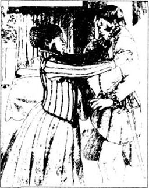
第二天早晨，达恩利来见我。他显得很害怕。
“怎么了，丈夫？”我问道，“你干吗哭？”
“噢，玛丽，玛丽！”他说，“对不起，我错了！我帮助那些人杀死了里奇奥，现在马里伯爵回来了，和他们在一起！他恨我！我怕他们会杀了我，还有你。玛丽，为你肚子里的我们的孩子想一想吧！”
他又一次抱着我。我很生气。很抱歉，詹姆斯，这人就是你的父亲。他是个愚蠢的男孩，不是个男子汉。他高大健壮又漂亮，可是他从来没像个男子汉或一个亲王似的考虑问题。
我说：“你了解这些人，亨利。他们想要什么？”
“他们——他们想要我们的孩子，玛丽。他们不要我们。他们要把你关进监狱，他们不想让你做女王，他们想让你的孩子做国王或女王。我——我不知道他们要怎样处置我。”
“或许他们也想让你做国王，而不要我。”我很平静地说，“然后你就按他们说的去做，像个乖男孩。”
“也许吧，玛丽。他们昨天是这样说的。不过既然马里回来了——我就说不准了。我很害怕，请帮帮我吧！”他又开始哭了起来，“我们该怎么办？”
“我们可以逃走，”我说，“我们可以在鲁斯温和他的手下阻拦我们之前迅速而不声不响地离开爱丁堡。安静一会儿，让我想一想。”
我来来回回徘徊了二三分钟，然后说道：“亨利，回到那些人那里去。告诉他们——”
“不！玛丽，请别这样！我办不到！我怕他们！”
“听我说，亨利！试着做一个男子汉。去告诉他们，我病了，是因为怀孕的缘故。说我不生他们的气。再跟他们说些什么——骗骗他们。然后，今天晚上，带上这里的一些人和马，从城堡后面……”
他去了，也这样做了。一整天我等在自己的房间里听动静。然后在清晨1点钟，达恩利和我悄悄地从城堡后的楼梯下来。我的一些朋友们已牵了马等在那里。很快地，我们骑马消失在夜幕里。
那是个很糟糕的夜晚。外面又黑又冷。我生病了，达恩利很害怕。“快点！”他说，“骑得再快点，女人，你太慢了！”
可我是个孕妇，外面又冷又黑。我们在雨中骑了五个小时。“我不能再骑了，亨利！”我说，“我病了。为孩子想一想！我不想让它死掉！”
“为什么不呢？”他说，“我们总有机会再要一个！”
我很抱歉，但那是真的。你父亲是那样说的，詹姆斯。随后，他远远地骑在了我前面，消失在夜色里。我和我的好伙伴贝斯·柯尔在后面慢慢地骑着。
早晨我们到了唐巴尔城堡。达恩利睡着了，我给我的朋友写信。第二天，博思韦尔勋爵来帮我了。我喜欢他——他是个善良、健壮的男人。不久，我就拥有了一支八千士兵组成的军队。博思韦尔和我率领着军队驱马回到爱丁堡。结果鲁斯温勋爵死了，他的一些朋友逃走了。可马里伯爵留了下来。
整个夏季我治理着这个国家，并等待着孩子的降生。我的丈夫不在我房间。我不想见到他。没有人想见到他。或许他和他的朋友在一起喝酒。我不知道。
不久以后，6月19日，在爱丁堡的一间小房间里，我的孩子出生了。詹姆斯，我的儿子，生你费了好长时间，但最终，你还是躺在我怀抱里了。
我把你父亲叫进来。“亨利，我的勋爵。”我说，“这是我们的孩子！看着他吧，勋爵。抱抱他，他是你的儿子——难道他不漂亮吗？”
可是你的父亲不爱我，詹姆斯。在你出生之后，他经常和别的女人睡觉。我知道这个是因为他对谁都这么说。我想他是想让人们都知道。我很抱歉，可我认为他并不爱你，詹姆斯。当我带你去教堂给你取名字时，他没来，他没有兴趣。
可就是因为他，达维·里奇奥死了。我永远不会忘记这一点，永远不！
6 Kirk O'Field
6
Kirk O'Field
I had a new man to help me now. The Earl of Bothwell—a strong, clever man. He was older than me; he was not a boy like Darnley. He worked hard and he could think. He was a good fighter and he was not afraid of other men. Perhaps you are like him, James, my son?
In January your father, Darnley, was ill in Glasgow. I went to see him, and took him back to Edinburgh. He was unhappy, and afraid of people. He saw enemies behind every door. Poor stupid boy! He said he loved me again. I was angry, but I felt sorry for him, too. He was very ill.
'It's not far now, Henry,' I said. 'You can sleep in the castle.'
'No, not there, please, Mary!' he said. 'I don't want to go into the castle. I'm afraid of it!'
'But where do you want to go?' I asked.
'Find me a little house outside the town, and stay with me there,' he said. 'We can be happy there.'
So I found him a small house called Kirk o'Field, outside Edinburgh. He stayed there, in a room upstairs, and sometimes I slept in a room downstairs. Darnley was often afraid, and I visited him every day. Slowly, he got better.
On Sunday, 9th February, there was a big wedding in Edinburgh. After the wedding, Bothwell and I walked out to Kirk o'Field to see Darnley and talk to him. Everyone sang, and laughed, and was very happy.
At ten o'clock I was tired. 'Good night, my lords,' I said. 'I'm going downstairs to bed.'
Lord Bothwell put his hand on my arm. 'Your Majesty,' he said. 'You can't sleep here now. Don't you remember? People are dancing and singing in town tonight—everyone wants you to go.'
'Oh, yes. I forgot,' I said. 'Of course, people want to see me there. So, good night, Henry. Sleep well.'
Darnley was very unhappy. 'Please, Mary my love, don't go!' he said. 'Don't leave me here!'
But I did not love him now. I remembered the night when Riccio died. So I smiled and said, 'Good night, Henry. Be a man now. Don't be afraid of the dark.'
Then I went downstairs with Lord Bothwell. Outside the house, we met one of Bothwell's men. He looked afraid, and there was something black on his face and hands.
'Jesus, man, how dirty you are!' I said. 'Don't come near me with those hands.'
'No, my lady, of course not,' he said. He looked at Bothwell for a minute, and then ran away quickly. I laughed, got on my horse, and forgot about it.
I tell you before God, James, I did not kill your father. It was not me. I knew nothing about it—nothing!
I sang and danced in town, and then went to bed in Edinburgh Castle. Then, at two o'clock in the morning, there was a sudden noise—a very big BANG! Everybody heard it all through the town.
'My God!' I said. 'What's that?'
Everyone ran out of their rooms. Lord Bothwell was downstairs. 'Don't be afraid, ladies,' he said. 'My men are outside—they're going to see what it is.'
After an hour he came to see me. 'Please sit down, my lady,' he said. 'I have some unhappy news.'
'Yes, my lord. What is it?'
'It's your husband, Lord Darnley. He is dead.'
'But—how? How did he die? Who killed him?'
'I don't know, my lady. That bang—that was his house, Kirk o'Field. It's not there any more.'
'What? And Darnley was inside?'
'Well, no, my lady,' Bothwell said slowly. 'My men found him in the garden, not in the house. He is wearing only nightclothes, and there is no blood on him. But he is dead. I am sorry.'
'Take me out there! I want to see him—now!'
'Yes, my lady.'
I went out to Kirk o'Field in the early morning. There was no house now—no walls, no doors, no windows—nothing. And there in the garden, a long way from the house, was that poor dead boy, my husband.
I did not love him but I cried then. He was your father, James, and I did not kill him. I don't know who killed him, but he had many enemies in Scotland.
I was very afraid. I, too, had enemies, and I often slept there. Perhaps someone wanted to kill me, too.
fighter n. someone who likes to fight others. 战士；士兵；好斗者。
saw v. past tense of 'see'. “看”的过去式。
enemy n. someone who hates or wishes to hurt another person. 敌人；仇人；仇敌。
wedding n. marriage. 婚礼。
downstairs adv. to or on a lower floor. 在楼下；往楼下。
quickly adv. at a rapid rate. 快地；迅速地。
dirty adj. not clean. 脏的。
sudden adj. happening quickly. 突然的；意外的。
news n. report or programme that tells abut things that have just happeded. 新闻；报道；消息。
6 柯克·欧菲尔德
6 柯克·欧菲尔德
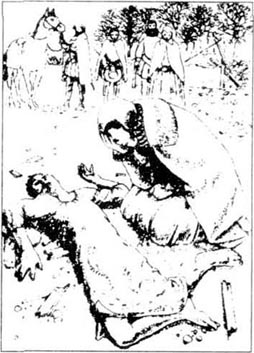
现在，又有一个人来帮我了。博思韦尔勋爵——一个健壮聪明的男人。他比我大；他不像达恩利那样像个小男孩。他工作努力且会思考。他是个勇士，他不怕别人。或许你像他，詹姆斯，我的儿子？
一月份，你的父亲，达恩利在格拉斯哥生病了。我去看他，并把他带回爱丁堡。他很不愉快且害怕周围的人。每一扇门后面他都能看见仇敌。可怜、愚蠢的男孩！他说他又爱我了。我很生气，但我也觉得对不住他。他病得很重。
“现在不远了，亨利，”我说，“你可以睡在城堡里。”
“不，我不睡那儿，求求你，玛丽！”他说，“我不想走进城堡。我怕！”
“但是你要去哪儿呢？”我问道。
“给我在镇外找一间小房子，我们一起待在那儿，”他说，“我们在那里可以很幸福，”
于是，我在爱丁堡外给他找了一间叫柯克·欧菲尔德的小屋。他住在那边楼上的一个房间里，而我有时候睡在楼下的房间里。达恩利经常感到恐惧。我每天都去看望他。渐渐地，他好转起来了。
2月9日，星期日，在爱丁堡有一个大型的婚礼。婚礼结束后，我和博思韦尔一起出来去柯克·欧菲尔德看望达恩利，陪他聊天。大家欢歌笑语，非常快乐。
10点钟了，我感到很累。“晚安，我的勋爵们，”我说道，“我要下楼去睡了。”
博思韦尔勋爵抓住我的胳膊。“陛下，”他说，“现在您不能睡在这儿。您难道忘了？今晚人们在镇上载歌载舞——每个人都希望您去。”
“噢，对，我忘了，”我说，“当然，人们想在那儿见到我。好吧，晚安，亨利，睡个好觉。”
达恩利很不高兴。“玛丽，我亲爱的，请不要走！”他说，“不要留下我一人在这里！”
可是我现在不爱他了。我想起里奇奥被杀的那一晚。于是我笑着说：“晚安，亨利。现在要像个男子汉。不要害怕黑暗。”
于是我和博思韦尔勋爵下了楼。在房子外面，我们碰到了一个博思韦尔的手下。他看起来很惊慌，脸上和手上沾了些黑乎乎的东西。
“天哪，你这个人多脏啊！”我说，“手这么脏，不要走近我。”
“是，夫人，当然不，”他说，他朝博思韦尔看了一眼，很快就跑开了。我笑了，骑上马背，就把这事给忘了。
在上帝面前，詹姆斯，我告诉你，我没有杀死你的父亲。不是我杀的。我对此一无所知——一点儿也不知道！
我在镇上又唱又跳，然后就睡在了爱丁堡城里。早晨两点钟，突然传来了轰的一声巨响！整个镇上的人都听见了。
“我的上帝啊！”我说，“那是什么声音？”
大家都从自己的房间里跑出来。博思韦尔勋爵下了楼。“不要害怕，夫人们，”他说道，“我的人已经出去了——他们去看看到底是怎么回事。”
一个小时后他来见我，“请坐下，夫人，”他说道，“我有一些不愉快的消息要告诉您。”
“好的，勋爵，是什么事？”
“是您的丈夫，达恩利亲王。他死了。”
“可是——怎么会？他怎么死的？谁杀了他？”
“我不知道，夫人。那声巨响——就来自他的房子，柯克·欧菲尔德。它已不存在了。”
“什么？可达恩利在里面吗？”
“噢，他不在，夫人，”博思韦尔慢慢地说道，“我的人在花园里而不是在房子里发现了他。他只穿着睡衣，身上没有血迹。可他已经死了。我很难过。”
“把我带到那儿去！我想见他——现在！”
“好吧，夫人。”
清晨，我去了柯克·欧菲尔德。现在那里已经没有房子了——没有墙，没有门，没有窗户——什么也没有。而在花园里，离房子很远的地方，躺着那可怜的男孩的尸体——那就是我的丈夫。
虽然我不爱他，但那时候我哭了。他是你的父亲，詹姆斯，我没有杀他。我不知道是谁杀死了他，但他在苏格兰有很多仇敌。
我感到很害怕。我也有仇敌，而我经常睡在那里。或许有人也想杀我。
7 Bothwell
7
Bothwell
Soon everyone in Europe heard the news. The Queen of France and the Queen of England wrote angry letters to me. Who killed the King? they asked. I was very unhappy at this time, James. We looked for the killers, but we could not find them. Please believe me, James. The Scots lords are difficult men. Some were friends, some were enemies, but they changed all the time.
Many people in Scotland said: 'Bothwell killed Lord Darnley.' I heard them, outside the castle, and in the town. But I never believed it. People in Edinburgh sold horrible stories and pictures of Bothwell the same day that Darnley died. It was too soon. Perhaps Darnley's killers wrote these stories about Bothwell, before they killed Darnley.
I don't think Lord Bothwell killed your father, James. He was a good friend to me in difficult times. He was a good strong, clever man, and he worked hard. I liked that. A lot of women liked him, I think.
Three times that spring, he asked me to marry him. He had a wife, and I could not marry again, so soon. I asked him to wait.
Then, on 24th April, I rode out of Edinburgh to the north. I had five or six friends with me. Six miles outside the town, Lord Bothwell met us, with an army.
'Why are you here, my lord?' I said.
He smiled. 'Because I want to meet you, Mary,' he said. 'I want you to come with me to my castle.' He rode next to me, and his men rode between me and my friends.
I was afraid, and a little excited, too. 'But, my lord, you can't do this!' I said. 'I don't want to come with you now.'
'But I want you, Mary,' he said. 'Your friends can't stop me. I love you, and I want to marry you. What's wrong with that?'
I said nothing. What could I say? I liked him, and he had an army. I had only six friends. So I rode with him to his castle in Dunbar, and stayed there two weeks. And then... He was a strong man, and I was only a woman. And I did like him, James. I liked him very much.
After two weeks in Dunbar, Bothwell and I rode back to Edinburgh. His wife did not want him, and was happy to divorce him. So, on 15th May 1567, I married him.
He was a good man, James. A much better man than your father. I needed a strong man to help me rule the country.
But I was wrong. I understand that now. All the Scots lords were afraid of Bothwell, and many of them were his enemies. They had an army, and on 15th of June, Bothwell and I rode out to fight them.
We met them at Carberry Hill. It was a hot day, and the two big armies stood, and looked, and waited. Their army had a big flag with a picture of your poor dead father, Darnley, on it. Under the picture, there were the words 'Find my killers, oh God.'
'Come on, my lord,' I said to Bothwell. 'Our army is better than theirs—let's fight them!'
Bothwell rode up and down, and talked to his men. But they didn't want to fight. They talked, and looked at the flag, and waited. Then some of them walked home.
At five o'clock that evening Lord Kirkcaldy rode from his army to talk to us. He said to me, 'My lady, leave your husband, and come with us. We don't want men to die.'
And so, because our men didn't want to fight, I went with him. It was a very bad day for me. They took me back to Edinburgh, and people in the streets screamed at me: 'Kill the woman! She sleeps with her husband's killer! We want James to be King! Kill her now!'
I was unhappy, and afraid, and I was pregnant again. They took me to Lochleven Castle, and put me in a room like a prison. There, I did not eat for two weeks, and Bothwell's children—there were two babies—were born dead. I nearly died too—I was so angry and tired and ill. Then, one day after the babies died, Lord Lindsay gave me a letter. It said:
I, Mary, Queen of Scots, give the kingdom of Scotland to my son, James. From today, James is the new King of Scots. But because he is a child, the Earl of Moray, my half-brother, can rule the country for him.
Because I was afraid, and tired, and ill, I wrote my name on the letter: Mary. But it is not important, James, it doesn't change anything. I am Queen of Scots, not you. That letter changes nothing.
Bothwell went over the sea, and died in a prison in Denmark. I was a prisoner in Lochleven for a year. A lot of people in Europe were angry about that. Queen Elizabeth wrote to the Earl of Moray. 'You cannot keep a Queen in prison,' she said. 'It is very wrong!' I was pleased about that. But Moray didn't listen.
Lord Douglas lived in the castle, and his young son, William, liked me. One day, there was a wedding in the castle. People sang and danced and drank. William Douglas gave me some old women's clothes. I put the clothes on, and walked quietly out of the castle with him. He shut the castle door behind us, to keep his father's friends in. Then we got on some horses, and rode away through the night.
All my friends came back to me. Soon I had a big army. 'Mary is our Queen again!' people said. 'Give her back her son!' You were in Earl Moray's castle, James, so I came to fight him. I rode with my army to Langside, near Glasgow. And there...
There, James...
There, my son, I lost the fight. I am so sorry. I had many good, strong men in my army, but Earl Moray's men were stronger. Many of my men died, and some ran away. After the fight, I ran away too.
I did not want to go to prison again. So I rode south, to England. 'Queen Elizabeth wants to help me,' I thought. 'She understands. She wrote to Moray and she is a Queen, like me. I can come back to Scotland with her army, kill Moray, and find my baby son James. I am in England but I am free. I can try again.'
I was wrong about that, too. Very wrong.
killer n. someone who kills. 杀人者；凶手。
sold v. past tense of 'sell'. “卖”的过去式。
horrible adj. causing or likely to cause horror. 可怕的；恐怖的。
excited adj. full of strong feeling. 兴奋的；激动的。
divorce v. end one's marriage. 离婚。
pregnant adj. having a baby in your body before it is born. 怀孕的。
nearly adv. almost. 几乎；差不多。
prisoner n. someone who is being kept in a prison. 囚犯。
lost v. past tense of 'lose'. “丧失”的过去式。
7 博思韦尔
7 博思韦尔
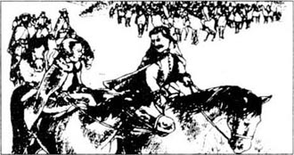
不久，每个欧洲人都听说了这件事。法国女王和英格兰女王给我写来了愤怒的信。谁杀死了亲王？她们质问道。在那段时间里我很不愉快，詹姆斯。我们寻找凶手，但是我们没能找到。请相信我，詹姆斯。苏格兰的贵族们很难对付。有些是朋友，有些是敌人，可他们一直不停地变。
苏格兰的很多人都说：“博思韦尔杀死了达恩利亲王。”在城堡外，在镇上，我都能听到这种传言。但是我从来不相信它。爱丁堡的人出售有关博思韦尔的可怕的故事和图片，叫作《达恩利死的同一天》。这简直太神速了。或许杀死达恩利的凶手们在他们杀死达恩利之前就写了这些有关博思韦尔的故事。
我认为博思韦尔勋爵没有杀害你父亲，詹姆斯。在我艰难时，他是我很好的朋友。他是个善良、健壮、聪明的男人，而且他工作努力。我很喜欢这点。我想许多女人都喜欢他。
那年春天，他向我求了三次婚。他有妻子，我不能这么快又一次嫁人。我让他等一等。
随后，4月24日，我骑马离开爱丁堡去北方。有五六个朋友随行。在出城镇6英里的地方，博思韦尔勋爵带着一支队伍在那里迎候我。
“你怎么在这儿，勋爵？”我问道。
他笑了。“因为我想见到你，玛丽，”他说，“我想让你跟我到我的城堡去。”他骑马跟在我旁边，他的人骑马跟在我和我的朋友之间。
我很害怕，又有点儿激动。“可是，勋爵，你不能这样做！”我说，“我不想现在就跟你走。”
“但是我需要你，玛丽。”他说，“你的朋友们阻止不了我。我爱你。我要娶你。那又有什么错？”
我无话可说。我能说什么呢？我喜欢他，并且他有一支队伍，而我只有六个朋友。于是，我骑马随他来到他在唐巴尔的城堡，并在那儿待了两个星期。之后……他是个强有力的男人，而我只是个女人。而且我确实很喜欢他，詹姆斯。我非常喜欢他。
在唐巴尔待了两个星期后，我和博思韦尔驱马回到爱丁堡。他的妻子不想要他了，并且很乐意地和他离了婚。因此，在1567年5月15日，我嫁给了他。
他是个好人，詹姆斯。一个比你父亲好得多的男人。我需要一个强壮的男人来帮我统治这个国家。
但是我错了。现在我明白了。所有苏格兰贵族都很害怕博思韦尔，他们中有许多人是他的敌人。他们拥有一支军队。于是在6月15日，我和博思韦尔策马去迎战他们。
我们在卡贝琳山头相遇。那是个炎热的一天，两支大军伫立着互相观望等待。他们的军队有一面很大的旗帜，上面是你可怜的死去的父亲达恩利的画像，画像下面有一行字：“找出杀死我的凶手，噢！上帝！”
“冲吧，勋爵，”我对博思韦尔说道，“我们的军队比他们的强，跟他们战斗吧！”
博思韦尔骑着马跑来跑去，并和他的人说着什么。可他们不想打仗。他们一边望着那面军旗，一边谈论着、等待着。然后，有一些人回去了。
晚上5点钟，柯克考德勋爵骑马从他的军队里过来和我们谈话。他对我说：“夫人，离开你的丈夫，跟我们一起走。我们不想有人死亡。”
正因为我们的人不想打仗，我跟他走了。这一天对我来说实在太糟了。他们把我带回了爱丁堡，街上的人们冲着我尖叫：“杀了这个女人！她和杀她丈夫的凶手一起睡觉！我们要让詹姆斯做国王！现在就杀了她！”
我既伤心又害怕，那时候我又怀孕了。他们把我带到拉克利文城堡，并把我关进一间像监狱一样的房间里。在那里，我两个星期没有吃饭，并且怀着博思韦尔的孩子——两个婴儿——一出生就死了。我几乎也要死掉——我感到非常愤怒、非常疲惫，而且病得很重。在两个婴儿死后的一天，林德辛勋爵给了我一封信，信上写道：
我，玛丽，苏格兰女王，把苏格兰王国交给我的儿子，詹姆斯。从今天起，詹姆斯就是苏格兰的新国王了。但因为他还是个小孩，可以由马里伯爵，我的同父异母兄弟为他治理这个国家。
由于我害怕、疲惫，又在生病，于是我便在信上签了名：玛丽。但这并不重要，詹姆斯，这并不能改变什么。我仍是苏格兰的女王，而你不是。那封信改变不了什么。
博思韦尔飘洋过海，并死在了丹麦的监狱中。我在拉克利文做了一年的囚徒。许多欧洲人民对此感到愤怒。伊丽莎白女王写信给马里伯爵。“你不能囚禁一个女王，”她说，“这是极其错误的！”我很高兴她这样说。但马里根本不听。
道格拉斯勋爵住在这城堡里，他年轻的儿子威廉很喜欢我。一天，在城堡里举行了一场婚礼。人们唱歌跳舞，举杯畅饮。威廉·道格拉斯给了我一些老妇人的衣服。我穿上这些衣服，并随他偷偷地离开了城堡。他关上了身后城堡的门，把他父亲的朋友们留在里面。于是我们骑上马，连夜离开了。
我所有的朋友都回到了我身边。不久，我就有了一支庞大的军队。“玛丽又是我们的女王了！”人们说道，“把她的儿子还给她！”你在马里伯爵的城堡里，詹姆斯，因此我去和他作战。我骑马率领我的军队来到格拉斯哥附近的朗塞得，并且在那里……
在那里，詹姆斯……
在那里，我的儿子，我战败了。我是那么伤心。在我的军队里，有许多精良的战士，可马里伯爵的士兵比我们的还要强壮。我的很多人都战死了，有些跑了。战争结束后，我也落荒而逃。
我再也不想进监狱了。因此我往南骑，去英格兰。“伊丽莎白女王会帮助我。”我想，“她能理解的。她给马里写过信，并且她像我一样是个女王。我可以带着她的军队回到苏格兰，杀了马里，找回我的孩子詹姆斯。我虽在英格兰，但我是自由人，我可以东山再起。”
关于这点我又错了，而且大错特错。
8 England
8
England
Elizabeth didn't give me her army. She put me in prison. You know this, James—it is the story of your life, not mine. I was twenty-five years old when I came to England, and I am forty-five now. Twenty years in English prisons.
Moray told lies about me. Mary and Bothwell killed Darnley, he said. Mary slept with Riccio and Bothwell and killed her husband. But it's not true! They're all lies, James— wicked lies! They only said these things because I am a woman, and a Catholic, and they don't want a Catholic queen in Scotland, they want a Protestant king.
A king like you, James. Why, James my son, don't you help me? Why are you friendly with Elizabeth, my enemy? You don't want me back in Scotland, do you? You believe these lies, don't you? You talk to Moray and his friends, every day. But they lied about me, James. Moray and his friends killed Riccio. They killed your father, too. They stole my husband Bothwell, stole my son...
Stole my son's love...
I am sorry, James. Forgive me. Sometimes I get very angry. It is difficult not to be angry, when you are in prison for twenty years.
Elizabeth didn't know what to do. Sometimes she believed Moray, sometimes she didn't. She was afraid to kill me, because I was a Queen. She was afraid to let me go free, because I have friends in England. The English Catholics want me to be Queen of England, not her. And she is a woman with no husband and no son, so she hates me, too.
Sometimes the English Catholics write to me and ask me for help, and sometimes I write to them. Sometimes Elizabeth's men find these letters. The English Protestants want to kill me because of these letters. 'You are a wicked woman!' They say. 'You killed your husband, Darnley, and now you want to kill our Queen Elizabeth. You're going to die!'
'I did not kill my husband,' I said. 'And when I came to England, I did not want to kill your Queen. I asked her for help—I wanted to go back to Scotland! But, my lords, she put me in prison for twenty years! Twenty years, my lords! I want to be free—don't you understand that? When men write to me and try to help me, then yes, sometimes I write back! Why not? Is that wicked, do you think?'
They didn't listen. Of course not. They want to kill me. And so they wrote to Queen Elizabeth. And now I sit here, in Fotheringhay Castle, and wait for her to answer. I do not want to die, James my son, but I do not want to live all my life in an English prison. I am old, and tired of life. Think well of me, James, my son, and...
forgive v. say or show that you are not angry with someone any more. 原谅；宽恕。
wait for to stay somewhere without doing anything until somebody or something comes or something happens. 等候；等待。
8 英格兰
8 英格兰
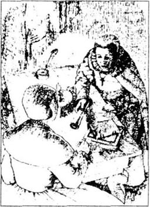
伊丽莎白没有给我她的军队。她把我关进了监狱。你知道这些的，詹姆斯——它是有关你生活的故事，不是我的。我来到英格兰时才25岁，而现在我已经45岁了，在英格兰的监狱里待了20年。
有关我的情况马里撒了谎。他说玛丽和博思韦尔杀死了达恩利，玛丽和里奇奥、博思韦尔同床共眠，还杀死了她的丈夫。但这不是真的！它们全是谎言，詹姆斯——恶意的谎言！他们这么说就是因为我是个女人，是个天主教教徒，而且在苏格兰，他们不想要一个是天主教教徒的女王，他们想要一个是新教教徒的国王。
一个像你这样的国王，詹姆斯。为什么不帮助我呢？詹姆斯，我的儿子，为什么你还和伊丽莎白，我的仇敌友好相处呢？你不想让我回到苏格兰，是吗？你相信这些谎言，不是吗？你每天和马里以及他的朋友们说话。可是他们编造了关于我的谎言，詹姆斯。马里和他的朋友杀死了里奇奥，然后又杀死了你的父亲。他们偷走了我的丈夫博思韦尔，偷走了我的儿子……
偷走了我儿子的爱……
我很抱歉，詹姆斯。原谅我。有时候我很愤怒。当你在监狱待了20年之久，不生气是很难的。
伊丽莎白不知道该怎样做。她有时相信马里，有时候不。她不敢杀我，因为我是个女王。她不敢让我获得自由是因为我在英格兰有朋友。英格兰天主教教徒想让我成为英格兰女王，而不是她。再说她是个没有丈夫没有儿子的女人，因此她也恨我。
有时英格兰的天主教教徒们给我写信并寻求帮助，有时我也写信给他们。有时伊丽莎白的人发现了这些书信。英格兰的新教教徒们想杀我就是因为这些书信。“你是个邪恶的女人！”他们说，“你杀死了自己的丈夫达恩利，而现在你又想杀我们的女王伊丽莎白。你死期将至了。”
“我没有杀害我丈夫，”我说，“而且当我来到英格兰时，我并没有想杀害你们的女王。我来请求她的帮助——我想回到苏格兰！但是，我的勋爵们，她把我关进了监狱整整20年！20年啊！我的勋爵们！我要自由——难道你们不理解吗？人们给我写信试图想帮助我，的确是的，有时我也回信！为什么不呢？你们认为这很伤天害理吗？”
他们不听。当然不听了。他们想杀我。因此他们给伊丽莎白女王写信。现在我坐在这里，在福瑟临黑城堡里，等待她的答复。我不想死，詹姆斯我的儿子，但是我也不想一辈子待在英格兰监狱里。我老了，对生活也厌倦了。多想一想我吧，詹姆斯，我的儿子，并且……
9 A death
9
A death
Queen Mary stopped writing then. Yesterday afternoon, 7th February 1587, we heard a horse outside our window. Mary looked out. There was a man there, on the road from London. He had a letter from the Queen of England.
In the evening, an Englishman, Lord Shrewsbury, came to see Mary, 'I am sorry, my lady,' he said. 'But I have a letter from my Queen. You're going to die, tomorrow.'
Mary did not move. 'When?' she asked quietly.
'At half past eight in the morning,' he said. 'I am very sorry, my lady.' He went away.
We did not sleep much that night. We talked and prayed to God, and she gave me her letter to her son, James. 'Give it to him, Bess, please,' she said. 'And tell him how I died.'
'Yes, my lady,' I said. And so now I am going to tell you. King James. This is how your mother died.
At six o'clock she got up, prayed, and dressed. She put on a red petticoat first, then a black dress, and a white veil over the dress. The veil came from her head to her feet; she could see out through it, but we could not see her face. She looked like a woman on her wedding day.
When the Englishmen came we went downstairs with her. Her little dog walked beside her, under the veil, but the Englishmen didn't see that. Six of us went into a big room with her. A hundred people stood and watched.
A Protestant churchman came to talk to her, 'My lady,' he said. 'Pray with me—'
'No,' she said. 'Thank you, but no. I was born a Catholic and I'm going to die a Catholic. I think God understands that.' She prayed for five minutes, and then stood up. The executioner came towards her. He was a big, strong man with an axe, and something black over his face.
'I am sorry, my lady,' he said. 'I don't hate you, but this is my work. Please forgive me.'
'Of course I forgive you,' Mary said. 'I am old, and tired, and you're going to open my prison doors for me. I am going to see God. Do your work well.'
Then she looked at me and her friends. 'Don't cry for me, ladies,' she said. 'Please, don't cry now.'
She could not walk to the block, so the executioner helped her. He took off her white veil, and then he took off her black dress, and put it on the floor. She stood there, in her red petticoat, with a smile on her face. Then the executioner put something over her eyes. Very slowly, Mary put her head on the block.
'The Lord my God is my one true friend,' she said. 'I give my life, oh God, into your hands.'
Then the executioner lifted his axe, once... twice... oh God! three times... and her head—her poor, poor head, fell on the floor.
It was very quiet in the room after that. It is a little thing, a head—a very little thing. But there was so much blood— blood on her red petticoat, blood on her black dress and her white veil, blood on the executioner's shoes, blood all over the floor. Blood, blood everywhere.
We all looked, and said nothing. The executioner put down his axe and stood quietly. And then Mary's little dog came out from under her bloody dress and veil, and walked slowly, unhappily, through the blood towards her head.
My lord, the story of your poor mother's life finishes here. We, her friends, cry for her, but that is how your mother died. She died like a Queen. A good lady and a famous Queen.
Mary, Queen of Scots.
pray v. speak to God. 祈祷。
dress v. put on clothes. 穿衣。
petticoat n. a piece of women's underwear that is like a thin loose skirt or dress with no sleeves. 衬裙。
veil n. a covering of fine cloth or net for the head or face. 面纱；头巾。
executioner n. the official who executes. 刽子手。
axe n. tool for cutting wood. 斧。
take off 脱下。
9 死亡
9 死亡
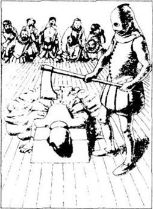
然后，玛丽女王停止了写信。昨天下午，即1587年的2月7日，我们听到窗外传来了马蹄声。玛丽向窗外望去，从伦敦方向来的路上出现了一个男人，他捎来了英格兰女王的一封信。
晚上，一个英格兰人，施鲁斯伯里勋爵来看玛丽。“我很抱歉，夫人，”他说，“可是我有一封我的女王写来的信。您明天将被处死。”
玛丽一动也没动。“什么时候？”她平静地问道。
“早上8点半钟。”他说，“我十分抱歉，夫人。”他说完就离开了。
那晚我们没睡多少。我们谈着话并且向上帝祈祷，她把给她儿子詹姆斯的信交给我。“请把信交给他，贝斯，”她说，“并且告诉他我是怎么死的。”
“好的，夫人。”我说道。因此，现在就由我来告诉你，詹姆斯国王，你母亲是怎么死的吧。
早上6点钟，她起床了，祈祷完毕，穿好衣服。她先穿上一件红色的衬裙，然后穿上一件黑色的连衣裙，再在裙子外面套上一件白色的面纱。面纱一直从头罩到脚；透过它，她能看得见外面，但我们却不能看到她的脸。她看起来像个婚礼上的新娘。
那个英格兰人来的时候，我们就跟着她下了楼。她的小狗跟在她身边，跑在面纱下面，但那个英格兰人没有注意到。我们6个人跟着她走进了一个大房间，有100人站在那里观望。
一个新教教士走过来和她说话。“夫人，”他说道，“跟我一起祈祷——”
“不，”她说，“谢谢你，但我不。我生为天主教教徒，死也为天主教教徒。我想上帝会明白的。”她祈祷了5分钟，然后站了起来。那刽子手向她走过来。他又大又壮，手里拿着斧子，一个黑乎乎的东西盖着他的脸。
“我很抱歉，夫人，”他说，“我并不憎恶您，但这是我的工作。请原谅我。”
“我当然会原谅你。”玛丽说，“我老了，也感到累了，你将为我打开监狱的大门。我要去见上帝了。好好干。”
随后她看着我和她的朋友们。“不要为我而哭，夫人们，”她说，“现在请别哭了。”
她不能走到木台那儿，于是那刽子手拉她过去。他摘下她白色的面纱，然后脱下她黑色的连衣裙，放到地板上去。她站在那里，穿着红色的衬裙，脸上带着微笑。接着，那刽子手用东西遮住了她的眼睛。慢慢地，慢慢地，玛丽将头放在了木台上。
“我的主上帝是我一个真正的朋友，”她说，“噢，上帝，我把我的生命放进您手中了。”
然后那刽子手举起了他的斧子。一次……两次……噢，上帝！三次……她的头——她那可怜的，可怜的头颅，掉在了地板上。
在那之后房间里是一片寂静。它是个小东西，一颗头颅——一个非常小的东西，但却有这么多血——鲜血喷到她红色的衬裙上，喷到她黑色的连衣裙和她那白色的面纱上，喷到了刽子手的鞋上，喷得地板上到处都是。血，到处是血。
我们怔怔地看着，一句话也说不出来。刽子手放下了斧子，一言不发地站着。这时，玛丽的小狗从她那溅满血的连衣裙和面纱下面钻了出来，慢慢地、伤心地淌过鲜血，走向她的头颅。
我的国王，有关你可怜的母亲的生平就说到这里了。我们，作为她的朋友，为她哭泣，但这就是你母亲怎么死的。她死得像个女王，一位好夫人，一位驰名的女王。
玛丽，苏格兰女王。
Exercises
Exercises
A Checking your understanding
Chapters 1 and 2 Are these sentences true or false?
1 Mary has a little dog.
2 Queen Elizabeth is afraid of Mary.
3 Bess Curle wrote the story.
4 Mary says 'I killed James's father.'
5 Mary was a Queen when she was one week old.
6 Mary married when she was sixteen.
7 Mary is a Catholic and James is a Protestant.
8 Most Scottish people are Catholics.
9 John Knox wanted to marry Mary.
10 Mary didn't go to Knox's church.
Chapters 3 and 4 Who said this in the story?
1 Our two countries need to be friends.
2 She wants her lover to be King of Scotland!
3 I'm not interested in work like that.
4 Riccio is in the Queen's rooms every night.
5 Please tell that man to move.
6 He goes out, woman!
7 They're going to kill me! Don't—aaaaaargh!
8 You never talk to me.
9 You aren't king—you're a stupid boy!
10 Never!
Chapters 5, 6 and 7 Who in the story...
1 ... cried in front of Mary?
2 ... waited all day in her rooms?
3 ... rode for five hours in the rain?
4 ... came to help Mary?
5 ... slept with other women?
6 ... was ill in Glasgow?
7 ... had something black on his face and hands?
8 ... sold horrible stories and pictures of Bothwell?
9 ... rode from his army to talk to Mary and Bothwell?
10 ... died in a prison in Denmark?
Chapters 8 and 9 Are these sentences true or false?
1 Moray talked to Elizabeth about Mary.
2 Mary was in an English prison for forty-five years.
3 The English Catholics wanted Mary to be Queen of England.
4 She carried her little dog upstairs.
5 Mary cried.
6 Mary had a red petticoat under her black dress.
7 Mary prayed before she died.
8 There wasn't much blood.
B Working with language
Put together these beginnings and ends of sentences.
| Mary came back to Scotland | after Kirk o'Field blew up. |
| The Scots lords hated Riccio | because she couldn't make up her mind. |
| Mary asked Darnley to help | so they killed him. |
| Mary went away with Bothwell | to ask Elizabeth for an army. |
| Darnley's body was in the garden | but he didn't like the work. |
| Mary went to England | because he had an army. |
| Elizabeth kept Mary in prison | when her husband died. |
Use these words to join these sentences together.
because so when after but and before
| 1 John Knox didn't like Mary. | She was a Catholic and a woman. |
| 2 Mary liked Darnley. | She married him. |
| 3 Bothwell met Mary outside Edinburgh. | He took her to his castle. |
| 4 Mary liked Riccio. | Moray and Darnley didn't like him. |
| 5 Darnley was afraid. | Mary wasn't with him. |
C Activities
1 You are a newspaper reporter. You talk to Mary, Elizabeth, Moray, and Bothwell. Write a story called: 'Who killed Darnley, and why?'
2 Imagine you are in Scotland when Bess gives Mary's letter to James. What do they talk about? Write a dialogue and act it out with a partner.
3 You are talking to the Earl of Moray, Mary's half-brother. Write down your questions, and his answers. Act your dialogue out with a partner.
封底
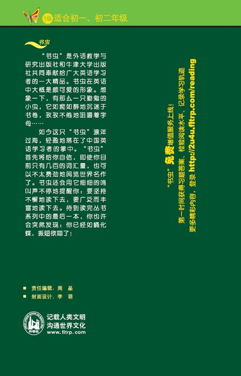